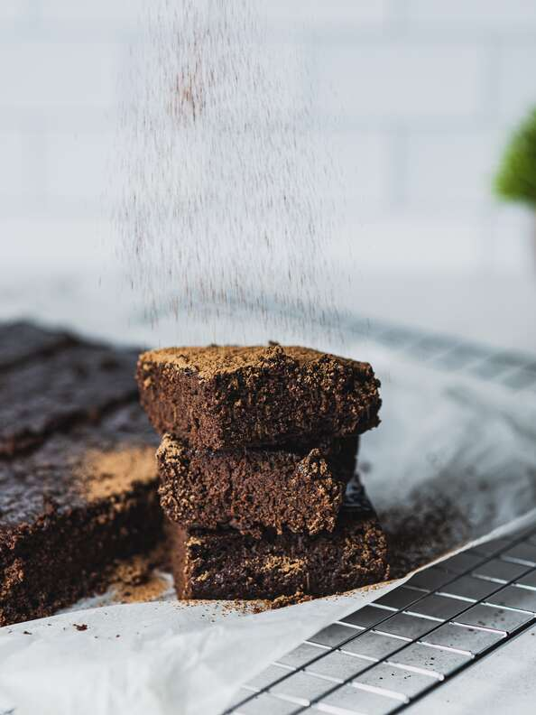

Brownies

- 2 cups unbleached all-purpose flour
- 2 cups white sugar
- ¾ cup unsweetened cocoa powder
- 1 teaspoon baking powder
- 1 teaspoon salt
- 1 cup water
- 1 cup vegetable oil
- 1 teaspoon vanilla extract
- Preheat the oven to 350 degrees F (175 degrees C).
- In a large bowl, stir together the flour, sugar, cocoa powder, baking powder and salt. Pour in water, vegetable oil and vanilla; mix until well blended. Spread evenly in a 9x13 inch baking pan.
- Bake for 25 to 30 minutes in the preheated oven, until the top is no longer shiny. Let cool for at least 10 minutes before cutting into squares.